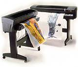

| ѕлоттер (plotter) предназначен
дл€ вывода на бумагу чертежей, крупноформатных графиков, рисунков. |
 |
ќсновными
потребител€ми плоттеров €вл€ютс€ —јѕ– (системы автоматизированного проектировани€),
√»— (геоинформационные системы), делова€ графика.
¬иды плоттеров
ќсновные
разновидности плоттеров Ч перьевые и струйные.
ѕерьевой
плоттер выводит изображение, использу€ в качестве пишущего узла аналоги
традиционных инструментов чертежников и художников: рапидограф, карандаш,
фломастер и т. д. язык управлени€ этим устройством Ч векторный.
ѕерьевые
плоттеры условно раздел€ют на три группы:
Х плоттеры,
использующие фрикционный прижим дл€ перемещени€ бумаги в направлении одной
оси и движени€ пера по другой;
Х барабанные
или рулонные плоттеры, предназначенные дл€ печати на рулонной бумаге;
Х планшетные
плоттеры, в которых бумага неподвижна, а перо перемещаетс€ по обеим ос€м.
—труйный
плоттер Ч устройство растровой печати, как и обычный струйный принтер.
»х отличие от принтеров в поддержке векторных €зыков.
’арактеристики современных плоттеров
‘ормат печати
Ч до ј0.
ќбеспечивают
полноцветную печать.
–азрешающа€
способность Ч до 720 dpi.
—корость
печати Ч от 2 минут на формат ј1 при монохромной печати.
–ешение
проблем сложной графики с использованием встроенных программных или аппаратных
растровых процессоров RIP.
–ежимы
печати Ч быстрый, нормальный, качественный.
»нтерфейс
Ч параллельный (LPT) или SCSI.